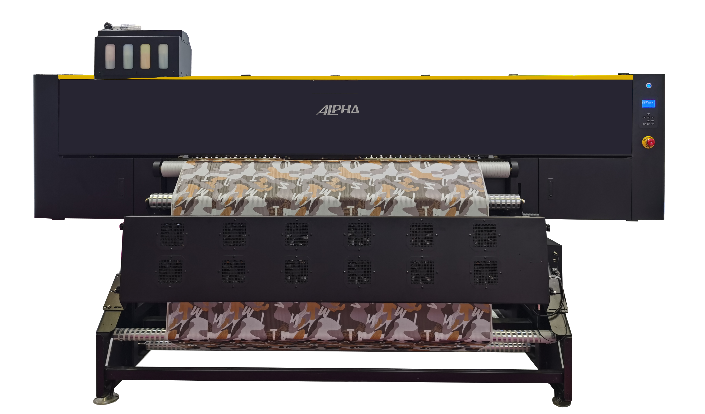
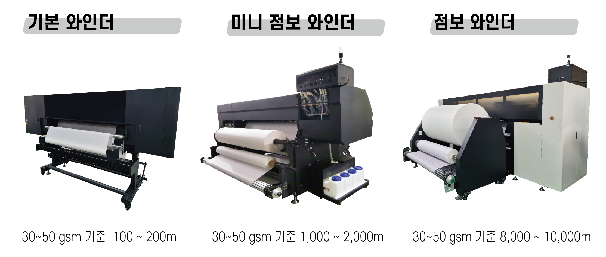

최고의 가성비를 자랑하는 8헤드 고속 프린터
M1908은 합리적인 투자로 최고의 생산성을 제공하는 모델입니다.
Epson i3200 8헤드를 장착하여 시간당 330㎡의 빠른 속도를 자랑하며,
안정적인 미디어 피딩 시스템으로 연속 작업에 최적화되어 있습니다.
| Model | M1908 |
|---|---|
| Print Head | 8 * Epson i3200 |
| Resolution | 360 x 1200 dpi / 2400 dpi |
| Draft Mode (1 PASS) | 330 ㎡/h |
| Production Mode (2 PASS) | 170 ㎡/h |
| Print Width | 1900 mm |
| Ink Type | Sublimation Ink |
| Software | NeoStampa / ErgoSoft / Maintop / Onyx |
| Dimensions | L 3750 x W 1160 x H 1680 mm |
| Weight | 680 KG |
모든 프린터 제품에는 생산 환경에 맞춰 아래 3가지 와인더 시스템 중 하나를 선택하여 적용할 수 있습니다.
